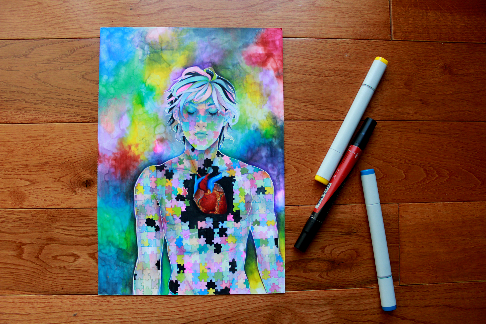
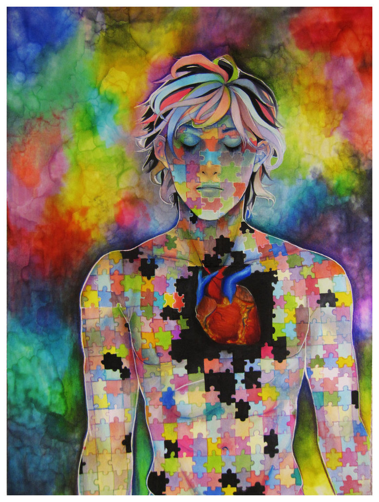

Picking Up the Pieces
This is a personal illustration that later became commissioned by a Children’s Charity. The illustration has an open ended theme but I was inspired by my little brother’s fast growth. If that makes any sense. This was fully traditional and done with Copic markers.

